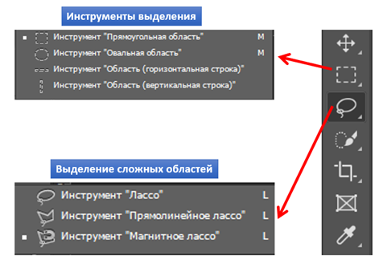

Требования к заданию:
- Собрать пазл, используя инструменты выделения.
Теоретическая часть:
Собрать пазл, используя инструменты выделения:
Сборка пазла с использованием инструментов выделения предполагает следующие шаги:
- Выбрать изображение для создания пазла.
- Использовать инструменты выделения (например, маркер, лассо) для выделения частей изображения, которые будут служить элементами пазла.
- Вырезать выделенные части изображения.
- Разбросать вырезанные элементы по полю для сборки.
- Предоставить пользователю возможность перемещать и поворачивать элементы для сборки пазла.
- Визуально подсвечивать место, куда нужно поместить каждый элемент.
- Завершить сборку, когда все элементы будут правильно расположены.
Такой подход к сборке пазла с использованием инструментов выделения обеспечивает интересное и вовлекающее взаимодействие пользователя с приложением.
